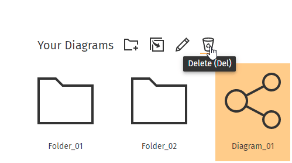
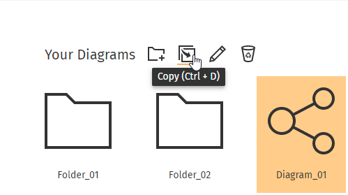
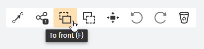

Getting Started
Home
The home screen allows you to manage your folders and diagrams. Here you can create,
edit or delete folders and diagrams and adjust the organization to your needs.
More here.

Editor
Do you need to visualize your companies infrastructure or software dependencies?
No problem - just jump into a diagram and customize it to your needs.
In the editor, you can create individual and dynamic diagrams from your data.
More here.

Inventory
Use the inventory to manage your data. Add new nodes and relations, inspect and
customize your database or append additional information to elements - all your
needs are covered.
More here.

Schemes
Dynamically adjust the blueprint for your data in the data-scheme manager.
Add new labels or relation types and customize them for your special use case.
More here.

Manual
Home - How to ...?
Create a Diagram
- In the “New Diagram” section, choose “Empty Diagram”
- Enter a name for your new diagram
- Confirm your choice
- After confirmation, you will be redirected to your new diagram
Create a Folder
- In the “Your Diagrams” section, click the “+ Folder” icon
- Enter a name for your new folder
- Confirm your choice
Rename a Diagram/ Folder
- In the “Your Diagrams” section, click on the diagram/ folder you want to rename
- After clicking on an element, new icons will appear above your diagrams
- Click on the “Pencil” icon to rename your diagram/ folder
- Enter a new name for your folder
- Confirm your choice
Delete a Diagram/ Folder
- In the “Your Diagrams” section, click on the diagram/ folder you want to delete
- After clicking on an element, new icons will appear above your diagrams
- Click on the “Recycle Bin” icon to delete your diagram/ folder
- Confirm your choice
Be careful - If you delete a folder, all of its content will be gone too!
Copy a Diagram
- In the “Your Diagrams” section, click on the diagram you want to make a copy of
- After clicking on a diagram, new icons will appear above your diagrams
- Click on the “Copy” icon to copy your folder
- Enter a new name for your copy
- Confirm your choice
Pro tip: Alternatively, you can use the CTRL-D shortcut to copy your diagram
Move a Diagram/ Folder
- In the “Your Diagrams” section, left-click and hold a diagram/ folder to drag it
- Drop it onto the folder of your choice
Open a Diagram/ Folder
- To open a diagram/ folder, double-click it in the “Your Diagrams” section
Editor - How to ...?
Find Specific Nodes
- In the “Node Overview” on the left-hand side of your screen click on the search bar
- Enter the name of the node you are looking for
Filter by Labels
- In the “Node Overview” on the left-hand side of your screen, click on the “Filter” icon in the search bar
- This will open a list of available labels contained in your database
- Check the labels you want to filter your list by
Add Nodes to a Diagram
- Left-click and hold a node in the “Node Overview”
- Drag the node into the diagram
- Drop it at the position of your choice
Move Nodes in a Diagram
- Left-click and hold a node in the diagram
- Drag it to the position of your choice
- Release the mouse button
Redirect Relations in a Diagram
- Left-click and hold a relation in the diagram
- Drag it to the position of your choice
- Release the mouse button
Remove an Anchor of a Redirected Relation
- Hover over the anchor which holds the relation in a fixed position
- Double left-click the circle that appears on top of the relation
Remove Nodes/ Relations from a Diagram
- Left-click the node/ relation you want to delete
- Click the “Recycle Bin” icon in the top-right corner of the diagram in the toolbar
Pro tip: Alternatively, you can press the DEL button on your keyboard to remove a node

Undo/ Redo an Action
- After altering the state of the diagram, the “Undo” and “Redo” icon in the top-right corner of the diagram (toolbar) are available
- Click on one of those icons to undo/ redo your actions
Pro tip: Alternatively, you can use the CTRL-Z or CTRL-Y shortcut to undo/ redo your actions
Center the Content Diagram
- In the top-right corner of the diagram, click on the “Center” icon in the toolbar
Pro tip: Alternatively, you can press the C button on your keyboard to center the content of the diagram
Add the Neighbors of a Node to the Diagram
- Left-click the node for which you want to add the neighbors
- In the top right corner of the diagram (toolbar), an icon will display the amount of neighbors the currently selected node has
- To add the neighbors to the diagram, click the icon
Pro tip: Alternatively, you can press the A button on your keyboard to add the neighbors to the diagram
Put a Node into the Foreground/ Background
- Left-click the node, which you want to put into the foreground or background
- In the top right corner of the diagram (toolbar), use the “Bring to front” or “Bring to back” icon to change the position of the element
Pro tip: Alternatively, you can press the F or B button on your keyboard to bring nodes to the front/ back
View the Attributes of a Node/ Relation
- Left-click the node/ relation you want to inspect (either in the diagram, or the “Node Overview”)
- Switch to the “Inspector” tab on the right-hand side of your screen
- The inspector will display all the information contained in a node or relation
Enter the Relation Edit Mode
- In the top-right corner of the diagram, click on the “Edit relations” icon in the toolbar
Pro tip: Alternatively, you can press the R button on your keyboard to enter the relation edit mode
What is the relation edit mode? The relation edit mode allows you to hide and show relations in your diagram or add new visual relations that are not already in the database.
Hide/ Show Relations
- Enter the relation edit mode
- Click on the relation you want to hide/ show
- Exit the relation edit mode
Add New Visual Relations
- Enter the relation edit mode
- Click on the node the relation comes from
- When moving your mouse you will see a blue arrow following your mouse
- Move your mouse towards the node the relation should go to and click on it
Change the Appearance of Nodes/ Relations/ Visual Elements
- Left-click the node or relation which you want to change
- Switch to the “Toolbox” tab on the right-hand side of your screen
- In the “Element Edit” section, adjust the styling of the node or relation
Resize Nodes in the Diagram
- Left-click the node you want to resize
- Use the orange box that surrounds the node to adjust its width and height
Add Visual Elements to the Diagram
- Switch to the “Toolbox” tab on the right-hand side of your screen
- In the “Visual Elements” section, choose an element
- Left-click and hold an element to drag it into the diagram
- Drop it at the position of your choice
Activate a Heat View
- Make sure the attributes you want to display in a heat view are defined as “number”, “color” or “enum” in the data scheme
- Switch to the “Toolbox” tab on the right-hand side of your screen
- In the “Heat View” section, choose attributes for the labels that you want to display in a heat view
- Adjust the style and boundaries of your heat view
Inventory - How to ...?
View the Neighbors of a Node
- Click on a node in the “Node Overview” on the left-hand side of your screen
- This will load the node and all of its neighbor nodes into the diagram
View the Neighbors of a Neighbor Node
- In the diagram, double-click the node you are interested in
- This will reload the diagram and display the new node with its neighbors
Create a Diagram from the Neighbor View
- Select a node in the “Node Overview” on the left-hand side of your screen
- Press the + Create Diagram button that will appear at the top-right of your diagram
Add New Relations
- Choose a node in the “Node Overview” on the left-hand side of your screen
- Left-click and hold the node that you want to add as a neighbor
- Drop the node on the diagram
- This will open a dialog - choose the end-point of your relation
- To change the direction of the relation, use the “Switch” icon on the right-hand side of the dialog
- Choose a relation type
- Confirm your choice
Add New Nodes
- Press the + Add Node button at the top of the “Node Overview”
- Enter the name of your node
- Confirm your choice
Modify Nodes/ Relations
- Left-click the node/ relation you want to inspect (either in the diagram, or the “Node Overview”)
- This will display all information contained in the node/ relation in the “Inspector” on the right-hand side of your screen
- Change the attribute values or enable/ disable them
- Press the Save button in the “Inspector”
Delete Nodes/ Relations
- Left-click the node/ relation you want to delete (either in the diagram, or the “Node Overview”)
- Press the Delete button in the “Inspector”
- Confirm your choice
Be careful - Deleted nodes/ relations cannot be recovered!
Schemes - How to ...?
Add New Labels
- Switch to the “Labels” tab on the left-hand side of your screen
- Press the + Add Label button to add a new label
- Choose a name and color in the “Editor”
- If needed, add attributes that the label should have
- Press the Create button to create the new label
Delete Labels
- Choose the label you want to delete in the “Labels” tab
- Press the Delete button in the “Editor”
- Confirm your choice
Be careful - If you delete a label, associated nodes will no longer be visible in the editor!
Add/ Delete/ Modify Node Attributes
- Choose the label which you want to alter in the “Labels” tab
- To add a new attribute, click the “+” icon in the “Attributes” section
- To delete an attribute, click the “x” icon of the attribute you want to delete
- To modify attributes, click the “dropdown” icon of the attribute you want to modify and adjust it to your needs
- Press the Save Changes button in the “Editor”
Change the Color of a Label
- Choose the label which you want to alter in the “Labels” tab
- Press the Color button in the “Editor”
- Choose a color in the color picker
- Press the Save changes button in the “Editor”
Add New Relations
- Switch to the “Relations” tab on the left-hand side of your screen
- Press the + Add Relation button to add a new relation
- Choose a name and possible connections in the “Editor”
- If needed, add attributes that the relation should have
- Press the Create button to create the new relation
Delete Relations
- Choose the relation you want to delete in the “Relations” tab
- Press the Delete button at the bottom of the “Editor”
- Confirm your choice
Be careful - Deleting a relation can alter the state of your diagrams!
Add/ Delete/ Modify Relation Attributes
- Choose the relation which you want to alter in the “Relations” tab
- To add a new attribute, click the “+” icon in the “Attributes” section
- To delete an attribute, click the “x” icon of the attribute you want to delete
- To modify attributes, click the “dropdown” icon of the attribute you want to modify and adjust it to your needs
- Press the Save Changes button in the “Editor”
Add/ Delete/ Modify Relation Connections
- Choose the relation which you want to alter in the “Relations” tab
- To add a new connection, click the “+” icon in the “Connections” section and choose a source and target label
- To delete a connection, click the “x” icon of the connection you want to delete
- Press the Save Changes button in the “Editor”